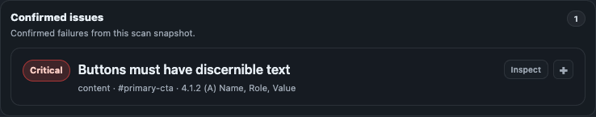

Results
Results and severity
Confirmed outputs are the first triage surface. This page explains severity counts and confirmed-finding classes.

Confirmed Issues
Confirmed Issues contain findings with the highest automated confidence available in the tested page state. They are actionable, but still require contextual review before compliance statements.
Severity counts and filters
The severity bar groups confirmed findings into Critical, Serious, Moderate, and Minor buckets. Counts are computed from currently visible confirmed findings in the active scan state.
Deterministic and corroborated findings
| Class | Meaning | User action |
|---|---|---|
| Deterministic | Rule evaluation produced a direct confirmed failure signal in current state. | Fix and retest. |
| Corroborated | More than one signal supports the same confirmed issue in the same scan. | Prioritize for remediation; still validate context. |
Result-reading workflow
- Filter to Critical and Serious first.
- Open each issue detail and use highlight/locate actions.
- Export evidence only after checking for sensitive snippets/selectors.
- Retest after fixes.